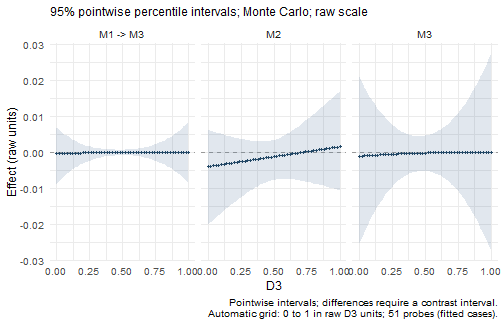

Specifying user-defined mediation models
Source:vignettes/GenerateModelCustom.Rmd
GenerateModelCustom.RmdUse wsMed(form = "UD", paths = ...) when the mediator
connections do not match a predefined model. Supply paired raw
measurements, then list the arrows among mediators and from mediators to
the outcome. This tutorial uses the package’s simulated data and the
default inference and reporting settings.
data(example_data)Mediator numbering
Mediator labels are assigned according to the order of the variables
supplied to M_C1 and M_C2. For example:
| Construct | Condition 1 | Condition 2 | Model label |
|---|---|---|---|
| A | A1 |
A2 |
M1 |
| B | B1 |
B2 |
M2 |
| C | C1 |
C2 |
M3 |
| D | D1 |
D2 |
Y |
Therefore, "M1 -> M3" represents a path from
construct A to construct C. Mediator numbering identifies variables; it
does not determine path direction.
Specifying a custom model
Write one directed connection per string in paths. Use
the model labels M1, M2, and so on, plus
Y, rather than raw column names such as A1.
For example, to connect A to C, C to the outcome, and B to the
outcome:
custom_paths <- c(
"M1 -> M3", # A to C
"M3 -> Y", # C to the outcome
"M2 -> Y" # B to the outcome
)Entry in paths
|
Connection in this example |
|---|---|
"M1 -> M3" |
A predicts C |
"M3 -> Y" |
C predicts the outcome D |
"M2 -> Y" |
B predicts the outcome D |
Each string represents one arrow, not a complete mediation route. For
example, specify "M1 -> M3" and
"M3 -> Y" separately instead of writing
"M1 -> M3 -> Y". Spaces around -> are
optional.
Only the listed mediator connections are included. In this example
there is no direct path from M1 to Y, and no directed path between M1
and M2. Paths from the condition to every mediator, and
the direct path from the condition to the outcome, are added
automatically. Do not add X to the path vector.
Fitting the complete model with wsMed
Pass the path vector to wsMed() along with the paired
measurements:
result_custom <- wsMed(
data = example_data,
M_C1 = c("A1", "B1", "C1"),
M_C2 = c("A2", "B2", "C2"),
Y_C1 = "D1",
Y_C2 = "D2",
form = "UD",
paths = custom_paths
)
print(result_custom)
#> wsMed analysis
#> Model: UD | DE | Observations: 100
#> Effects:
#> wsMed all | raw scale | mc
#> 95% percentile intervals; 20000 joint draws; SE from effect draws
#> Condition contrast: C2 - C1
#> Estimate Std. Error CI lower CI upper
#> cp: Direct effect -3.00e-02 1.68e-02 -6.31e-02 2.90e-03
#> indirect_1_3: M1 -> M3 -2.25e-05 3.63e-04 -8.44e-04 7.36e-04
#> indirect_2: M2 -1.40e-03 2.75e-03 -8.43e-03 2.98e-03
#> indirect_3: M3 -1.85e-04 2.17e-03 -5.11e-03 4.38e-03
#> total_indirect: Total indirect effect -1.60e-03 3.55e-03 -9.76e-03 4.94e-03
#> total: Total effect -3.16e-02 1.69e-02 -6.48e-02 1.55e-03
#> Inference draws: 20000 retained of 20000 ; 0 excluded before effect extraction.
#> Use as.data.frame() for the full-precision table and metadata.
#> Post-fit admissibility: 1 of 1 ; excluded rows: 0This call uses the default Monte Carlo CIs and unstandardized output. Use the usual summary method for effect and path-coefficient tables:
summary(result_custom)
#> wsMed statistical summary
#> Model: UD | Missing: DE | Observations: 100
#> Effects:
#> wsMed all | raw scale | mc
#> 95% percentile intervals; 20000 joint draws; SE from effect draws
#> Condition contrast: C2 - C1
#> Estimate Std. Error CI lower CI upper
#> cp: Direct effect -3.00e-02 1.68e-02 -6.31e-02 2.90e-03
#> indirect_1_3: M1 -> M3 -2.25e-05 3.63e-04 -8.44e-04 7.36e-04
#> indirect_2: M2 -1.40e-03 2.75e-03 -8.43e-03 2.98e-03
#> indirect_3: M3 -1.85e-04 2.17e-03 -5.11e-03 4.38e-03
#> total_indirect: Total indirect effect -1.60e-03 3.55e-03 -9.76e-03 4.94e-03
#> total: Total effect -3.16e-02 1.69e-02 -6.48e-02 1.55e-03
#> Inference draws: 20000 retained of 20000 ; 0 excluded before effect extraction.
#> Use as.data.frame() for the full-precision table and metadata.
#>
#> Path coefficients:
#> Estimate Std. Error CI lower CI upper
#> cp -0.03000 0.01684 -0.06307 0.00290
#> b2 -0.09632 0.09303 -0.27662 0.08915
#> d2 -0.01377 0.08708 -0.18534 0.15458
#> b3 -0.01350 0.10245 -0.21287 0.18842
#> d3 -0.16325 0.10038 -0.35988 0.03574
#> a1 -0.02712 0.01757 -0.06152 0.00743
#> a2 0.01448 0.01798 -0.02044 0.04994
#> a3 0.01368 0.01641 -0.01819 0.04573
#> b_1_3 -0.06142 0.09198 -0.23967 0.12025
#> d_1_3 -0.07843 0.08705 -0.24852 0.09208
#> Post-fit admissibility: 1 of 1 ; excluded rows: 0
#> Tables: $effects, $coefficients; analysis settings: $info.To include a direct M1-to-outcome connection, add its arrow to the vector:
expanded_paths <- c(
custom_paths,
"M1 -> Y"
)Refit the same call with paths = expanded_paths to
include that connection. This changes the fitted model and adds the
indirect route through M1 alone.
Input requirements
- Reference only mediator labels defined by the supplied column pairs.
- Use one arrow per string, starting at a mediator and ending at
another mediator or
Y. At least one arrow must end atY. - Do not repeat an arrow or use a self-loop such as
"M1 -> M1". - Do not create a cycle, such as both
"M1 -> M2"and"M2 -> M1".
Every mediator intended to contribute an indirect effect needs a
route to Y, either directly or through other mediators. The
package warns if a supplied mediator has no such route.
Indirect effects
wsMed() identifies all indirect routes implied by the
specified arrows. In the following notation, X denotes the
within-subject condition; it is not an entry to add to
paths. The model defined by custom_paths
contains three indirect effects:
| Route | Parameter label | Product |
|---|---|---|
X -> M1 -> M3 -> Y |
indirect_1_3 |
a1 * b_1_3 * b3 |
X -> M2 -> Y |
indirect_2 |
a2 * b2 |
X -> M3 -> Y |
indirect_3 |
a3 * b3 |
The last effect exists because the path from the condition to every
mediator, including
,
is added automatically. All identified indirect effects are summed to
form total_indirect, and the total effect is defined as
cp + total_indirect.
Parameter labels
The generated model uses the following labels:
| Path | Difference component | Level component |
|---|---|---|
ai |
– | |
bi |
di |
|
b_j_i |
d_j_i |
|
cp |
– |
For example, the path
uses b_1_3 and d_1_3, whereas
uses b3 and d3.
Add a moderator
Keep form = "UD" and the same custom_paths.
Add W to identify the between-subject moderator column and
MP to select the path coefficients to moderate. You do not
need to construct product terms yourself.
| Argument | What to supply | Example |
|---|---|---|
paths |
The mediator connections in the model | custom_paths |
W |
The moderator’s column name in the data | "D3" |
MP |
Coefficient labels for the selected paths | c("b_1_3", "b3") |
Choose the moderated paths
paths uses arrows such as "M1 -> M3",
whereas MP uses coefficient labels such as
"b_1_3". For the current custom model:
| Path to moderate | Entry in MP
|
Meaning |
|---|---|---|
| M1 to M3 | "b_1_3" |
The M1-difference slope in the M3-difference equation varies with W. |
| M3 to the outcome | "b3" |
The M3-difference slope in the outcome equation varies with W. |
| M2 to the outcome | "b2" |
The M2-difference slope in the outcome equation varies with W. |
Thus, MP = "b3" selects only the M3-to-outcome slope,
while MP = c("b_1_3", "b3") selects both slopes along the
M1-to-M3-to-outcome route. To add moderation of the M2-to-outcome slope,
use MP = c("b_1_3", "b3", "b2"). Each label must exist in
the model: "b1" is unavailable here because
"M1 -> Y" is absent from custom_paths. Do
not put an indirect-effect label such as "indirect_1_3" in
MP; select the coefficients that form that effect.
The corresponding average-component slopes can be selected with
"d_1_3", "d3", and "d2". These
are distinct coefficients: selecting "b3" does not also
select "d3".
The condition-to-mediator labels "a1",
"a2", "a3", and the direct-effect label
"cp" are also accepted. With W present, wsMed includes its
main effect in every mediator-difference and outcome-difference
equation. Consequently, these condition effects can vary with W even
when their labels are omitted from MP. For the b and d
slopes, MP controls which interaction terms are added.
Fit and read the results
Here, D3 is a continuous moderator. This call selects the M1-to-M3 and M3-to-outcome slopes and keeps the default Monte Carlo CIs and unstandardized output:
custom_moderated <- wsMed(
data = example_data,
M_C1 = c("A1", "B1", "C1"),
M_C2 = c("A2", "B2", "C2"),
Y_C1 = "D1",
Y_C2 = "D2",
form = "UD",
paths = custom_paths,
W = "D3",
MP = c("b_1_3", "b3")
)
print(custom_moderated)
#> wsMed analysis
#> Model: UD | DE | Observations: 100
#> Effects:
#> wsMed all | raw scale | mc
#> 95% percentile intervals; 20000 joint draws; SE from effect draws
#> Condition contrast: C2 - C1
#> Moderator: D3 in raw units; centering reference = 0.452271
#> Estimate Std. Error
#> cp@1: Direct effect [D3 = 0.452] -0.029850 0.016991
#> indirect_1_3@1: M1 -> M3 [D3 = 0.452] -0.000022 0.000370
#> indirect_2@1: M2 [D3 = 0.452] -0.001400 0.002744
#> indirect_3@1: M3 [D3 = 0.452] -0.000183 0.002197
#> total_indirect@1: Total indirect effect [D3 = 0.452] -0.001605 0.003579
#> total@1: Total effect [D3 = 0.452] -0.031455 0.017156
#> CI lower CI upper
#> cp@1: Direct effect [D3 = 0.452] -0.063464 0.003220
#> indirect_1_3@1: M1 -> M3 [D3 = 0.452] -0.000859 0.000693
#> indirect_2@1: M2 [D3 = 0.452] -0.008152 0.003015
#> indirect_3@1: M3 [D3 = 0.452] -0.005197 0.004528
#> total_indirect@1: Total indirect effect [D3 = 0.452] -0.009654 0.004942
#> total@1: Total effect [D3 = 0.452] -0.065283 0.002200
#> Inference draws: 20000 retained of 20000 ; 0 excluded before effect extraction.
#> Use as.data.frame() for the full-precision table and metadata.
#> Post-fit admissibility: 1 of 1 ; excluded rows: 0print() reports the conditional effects.
summary() also shows the conditional path coefficients:
summary(custom_moderated)
#> wsMed statistical summary
#> Model: UD | Missing: DE | Observations: 100
#> Effects:
#> wsMed all | raw scale | mc
#> 95% percentile intervals; 20000 joint draws; SE from effect draws
#> Condition contrast: C2 - C1
#> Moderator: D3 in raw units; centering reference = 0.452271
#> Estimate Std. Error
#> cp@1: Direct effect [D3 = 0.452] -0.029850 0.016991
#> indirect_1_3@1: M1 -> M3 [D3 = 0.452] -0.000022 0.000370
#> indirect_2@1: M2 [D3 = 0.452] -0.001400 0.002744
#> indirect_3@1: M3 [D3 = 0.452] -0.000183 0.002197
#> total_indirect@1: Total indirect effect [D3 = 0.452] -0.001605 0.003579
#> total@1: Total effect [D3 = 0.452] -0.031455 0.017156
#> CI lower CI upper
#> cp@1: Direct effect [D3 = 0.452] -0.063464 0.003220
#> indirect_1_3@1: M1 -> M3 [D3 = 0.452] -0.000859 0.000693
#> indirect_2@1: M2 [D3 = 0.452] -0.008152 0.003015
#> indirect_3@1: M3 [D3 = 0.452] -0.005197 0.004528
#> total_indirect@1: Total indirect effect [D3 = 0.452] -0.009654 0.004942
#> total@1: Total effect [D3 = 0.452] -0.065283 0.002200
#> Inference draws: 20000 retained of 20000 ; 0 excluded before effect extraction.
#> Use as.data.frame() for the full-precision table and metadata.
#>
#> Path coefficients:
#> Estimate Std. Error CI lower CI upper
#> cp@1: cp [D3 = 0.452] -0.02985 0.01699 -0.06346 0.00322
#> b2@1: b2 [D3 = 0.452] -0.09668 0.09286 -0.27706 0.08467
#> d2@1: d2 [D3 = 0.452] -0.00641 0.08965 -0.18213 0.16842
#> b3@1: b3 [D3 = 0.452] -0.01370 0.10379 -0.21420 0.19224
#> d3@1: d3 [D3 = 0.452] -0.15680 0.10278 -0.35544 0.04381
#> a1@1: a1 [D3 = 0.452] -0.02712 0.01728 -0.06096 0.00686
#> a2@1: a2 [D3 = 0.452] 0.01448 0.01791 -0.02029 0.04996
#> a3@1: a3 [D3 = 0.452] 0.01336 0.01623 -0.01839 0.04501
#> b_1_3@1: b_1_3 [D3 = 0.452] -0.05915 0.09217 -0.23830 0.12335
#> d_1_3@1: d_1_3 [D3 = 0.452] -0.05761 0.09043 -0.23386 0.11835
#> Post-fit admissibility: 1 of 1 ; excluded rows: 0
#> Tables: $effects, $coefficients; analysis settings: $info.For this continuous moderator, the default tables evaluate effects at the centering reference shown in the output. The default plot instead shows the indirect effects across the observed moderator range:
plot(custom_moderated)
Each indirect effect uses all coefficients along its route, evaluated
at the same moderator value. For example, indirect_1_3
combines the condition-to-M1, M1-to-M3, and M3-to-outcome coefficients.
The total indirect effect includes all routes in
custom_paths, including those without a selected b-path
interaction. A model that includes moderation need not show evidence
that an effect varies; interpret the estimates and their
uncertainty.
Choose moderator values
To request particular values, add at when reporting
results. The following uses the 25th, 50th, and 75th percentiles of D3
as illustrative probes:
probe_values <- quantile(
example_data$D3,
probs = c(0.25, 0.50, 0.75)
)
summary(
custom_moderated,
type = "indirect",
at = list(D3 = probe_values)
)
#> wsMed statistical summary
#> Model: UD | Missing: DE | Observations: 100
#> Effects:
#> wsMed indirect | raw scale | mc
#> 95% percentile intervals; 20000 joint draws; SE from effect draws
#> Condition contrast: C2 - C1
#> Moderator: D3 in raw units; centering reference = 0.452271
#> Estimate Std. Error CI lower CI upper
#> indirect_1_3@1: M1 -> M3 [D3 = 0.288] -7.61e-05 7.47e-04 -1.82e-03 1.34e-03
#> indirect_2@1: M2 [D3 = 0.288] -2.31e-03 3.68e-03 -1.14e-02 3.47e-03
#> indirect_3@1: M3 [D3 = 0.288] -4.06e-04 3.44e-03 -8.17e-03 6.72e-03
#> indirect_1_3@2: M1 -> M3 [D3 = 0.462] -1.99e-05 3.64e-04 -8.34e-04 6.88e-04
#> indirect_2@2: M2 [D3 = 0.462] -1.35e-03 2.72e-03 -8.05e-03 3.09e-03
#> indirect_3@2: M3 [D3 = 0.462] -1.73e-04 2.19e-03 -5.16e-03 4.49e-03
#> indirect_1_3@3: M1 -> M3 [D3 = 0.605] -4.42e-08 4.79e-04 -1.01e-03 9.76e-04
#> indirect_2@3: M2 [D3 = 0.605] -5.60e-04 2.92e-03 -7.43e-03 5.28e-03
#> indirect_3@3: M3 [D3 = 0.605] -5.49e-05 2.80e-03 -6.18e-03 6.09e-03
#> Inference draws: 20000 retained of 20000 ; 0 excluded before effect extraction.
#> Use as.data.frame() for the full-precision table and metadata.
#>
#> Path coefficients:
#> Estimate Std. Error CI lower CI upper
#> cp@1: cp [D3 = 0.288] -0.025502 0.021699 -0.068032 0.017185
#> b2@1: b2 [D3 = 0.288] -0.096683 0.092856 -0.277063 0.084672
#> d2@1: d2 [D3 = 0.288] -0.006408 0.089646 -0.182133 0.168425
#> b3@1: b3 [D3 = 0.288] -0.020509 0.118303 -0.248059 0.213903
#> d3@1: d3 [D3 = 0.288] -0.156803 0.102775 -0.355442 0.043808
#> a1@1: a1 [D3 = 0.288] -0.030228 0.021485 -0.072673 0.011686
#> a2@1: a2 [D3 = 0.288] 0.023870 0.022105 -0.019499 0.067463
#> a3@1: a3 [D3 = 0.288] 0.019788 0.020456 -0.020561 0.059332
#> b_1_3@1: b_1_3 [D3 = 0.288] -0.122735 0.115034 -0.348339 0.099899
#> d_1_3@1: d_1_3 [D3 = 0.288] -0.057606 0.090430 -0.233863 0.118348
#> cp@2: cp [D3 = 0.462] -0.030101 0.016985 -0.063845 0.002871
#> b2@2: b2 [D3 = 0.462] -0.096683 0.092856 -0.277063 0.084672
#> d2@2: d2 [D3 = 0.462] -0.006408 0.089646 -0.182133 0.168425
#> b3@2: b3 [D3 = 0.462] -0.013311 0.104543 -0.215033 0.194371
#> d3@2: d3 [D3 = 0.462] -0.156803 0.102775 -0.355442 0.043808
#> a1@2: a1 [D3 = 0.462] -0.026945 0.017291 -0.060780 0.007100
#> a2@2: a2 [D3 = 0.462] 0.013941 0.017923 -0.020877 0.049342
#> a3@2: a3 [D3 = 0.462] 0.012991 0.016237 -0.018653 0.044585
#> b_1_3@2: b_1_3 [D3 = 0.462] -0.055471 0.092319 -0.234371 0.126598
#> d_1_3@2: d_1_3 [D3 = 0.462] -0.057606 0.090430 -0.233863 0.118348
#> cp@3: cp [D3 = 0.605] -0.033877 0.020525 -0.074733 0.005715
#> b2@3: b2 [D3 = 0.605] -0.096683 0.092856 -0.277063 0.084672
#> d2@3: d2 [D3 = 0.605] -0.006408 0.089646 -0.182133 0.168425
#> b3@3: b3 [D3 = 0.605] -0.007402 0.133446 -0.271143 0.254797
#> d3@3: d3 [D3 = 0.605] -0.156803 0.102775 -0.355442 0.043808
#> a1@3: a1 [D3 = 0.605] -0.024249 0.020897 -0.065085 0.016914
#> a2@3: a2 [D3 = 0.605] 0.005790 0.021547 -0.035794 0.048020
#> a3@3: a3 [D3 = 0.605] 0.007411 0.019645 -0.030641 0.045796
#> b_1_3@3: b_1_3 [D3 = 0.605] -0.000246 0.113556 -0.221055 0.222402
#> d_1_3@3: d_1_3 [D3 = 0.605] -0.057606 0.090430 -0.233863 0.118348
#> Post-fit admissibility: 1 of 1 ; excluded rows: 0
#> Tables: $effects, $coefficients; analysis settings: $info.The name D3 in at must match the column
supplied to W. Supply values on the original scale, even
though wsMed centers continuous moderators internally. Choose values
that are meaningful for your study and supported by the data. Changing
at reuses the fitted model and inference draws. See Read and export results for selecting and
comparing effects.
Use a categorical moderator
The same paths and MP specification works
with a binary or multicategory moderator. Store it as an unordered
factor with the desired reference group as its first level, then supply
its column name through W; for example, use
W = "Group" if that factor is named Group. The default
tables report effects for all observed groups, and plot()
displays group-specific effects with CIs. The categorical predictor tutorial
shows how to declare the factor and compare groups.
Standardized moderated custom models
After the default analysis, request standardized results with:
summary(
custom_moderated,
standardized = TRUE
)
#> wsMed statistical summary
#> Model: UD | Missing: DE | Observations: 100
#> Effects:
#> wsMed all | marginal scale | mc
#> 95% percentile intervals; 20000 joint draws; SE from effect draws
#> Condition contrast: C2 - C1
#> Moderator: D3 in raw units; centering reference = 0.452271
#> Standardization: effect / marginal model-implied SD(D2 - D1); condition contrast is unscaled.
#> Plug-in marginal outcome-difference SD: 0.169551
#> The denominator is not a moderator-specific conditional SD.
#> Estimate Std. Error
#> cp@1: Direct effect [D3 = 0.452] -0.17605 0.09944
#> indirect_1_3@1: M1 -> M3 [D3 = 0.452] -0.00013 0.00213
#> indirect_2@1: M2 [D3 = 0.452] -0.00826 0.01569
#> indirect_3@1: M3 [D3 = 0.452] -0.00108 0.01260
#> total_indirect@1: Total indirect effect [D3 = 0.452] -0.00947 0.02049
#> total@1: Total effect [D3 = 0.452] -0.18552 0.10027
#> CI lower CI upper
#> cp@1: Direct effect [D3 = 0.452] -0.37223 0.01894
#> indirect_1_3@1: M1 -> M3 [D3 = 0.452] -0.00494 0.00406
#> indirect_2@1: M2 [D3 = 0.452] -0.04683 0.01744
#> indirect_3@1: M3 [D3 = 0.452] -0.02957 0.02583
#> total_indirect@1: Total indirect effect [D3 = 0.452] -0.05546 0.02880
#> total@1: Total effect [D3 = 0.452] -0.38280 0.01254
#> Inference draws: 20000 retained of 20000 ; 0 excluded before effect extraction.
#> Use as.data.frame() for the full-precision table and metadata.
#>
#> Path coefficients:
#> Estimate Std. Error CI lower CI upper
#> cp@1: cp [D3 = 0.452] -0.17605 0.09944 -0.37223 0.01894
#> b2@1: b2 [D3 = 0.452] -0.10242 0.09577 -0.28624 0.08747
#> d2@1: d2 [D3 = 0.452] -0.00762 0.10370 -0.21035 0.19633
#> b3@1: b3 [D3 = 0.452] -0.01312 0.09871 -0.20379 0.18299
#> d3@1: d3 [D3 = 0.452] -0.16174 0.10221 -0.35326 0.04530
#> a1@1: a1 [D3 = 0.452] -0.15463 0.09983 -0.35322 0.03972
#> a2@1: a2 [D3 = 0.452] 0.08064 0.10039 -0.11296 0.28024
#> a3@1: a3 [D3 = 0.452] 0.08230 0.09947 -0.11122 0.27955
#> b_1_3@1: b_1_3 [D3 = 0.452] -0.06390 0.09808 -0.25312 0.13126
#> d_1_3@1: d_1_3 [D3 = 0.452] -0.06531 0.10061 -0.26048 0.13301
#> Post-fit admissibility: 1 of 1 ; excluded rows: 0
#> Tables: $effects, $coefficients; analysis settings: $info.Alternatively, include standardized = TRUE in the
original wsMed() call to make standardized reporting the
default. at still uses raw moderator values. See standardized effects for
the scaling rules and CIs.
Optional: inspect the generated equations
The call to wsMed() performs data preparation and model
generation for you. Use printGM(result_custom) to inspect
the fitted model specification. If you want to generate the equations
without fitting, the lower-level functions below provide that
option.
PrepareData() converts the raw condition-specific
variables into mediator difference and centered level components and an
outcome difference score.
prepared_data <- PrepareData(
data = example_data,
M_C1 = c("A1", "B1", "C1"),
M_C2 = c("A2", "B2", "C2"),
Y_C1 = "D1",
Y_C2 = "D2"
)
names(prepared_data)
#> [1] "Ydiff" "M1diff" "M2diff" "M3diff" "M1avg" "M2avg" "M3avg"For mediator , the two components are
and
where the bar is the sample mean used by PrepareData()
to center the average component. The difference component is not
centered.
The corresponding model syntax is generated as follows:
custom_model <- GenerateModelCustom(
prepared_data = prepared_data,
paths = custom_paths
)
cat(custom_model)
#> Ydiff ~ cp*1 + b2*M2diff + d2*M2avg + b3*M3diff + d3*M3avg
#> M1diff ~ a1*1
#> M2diff ~ a2*1
#> M3diff ~ a3*1 + b_1_3*M1diff + d_1_3*M1avg
#> indirect_1_3 := a1 * b_1_3 * b3
#> indirect_2 := a2 * b2
#> indirect_3 := a3 * b3
#> total_indirect := indirect_1_3 + indirect_2 + indirect_3
#> total_effect := cp + total_indirectFor every specified structural edge, the generated regression
includes both the difference and level components of the predictor
mediator. Thus, "M1 -> M3" contributes
b_1_3*M1diff + d_1_3*M1avgto the regression equation for M3diff.
Only specified structural paths are added. Because
"M1 -> Y" is absent from custom_paths,
M1diff and M1avg do not appear directly in the
regression equation for Ydiff.